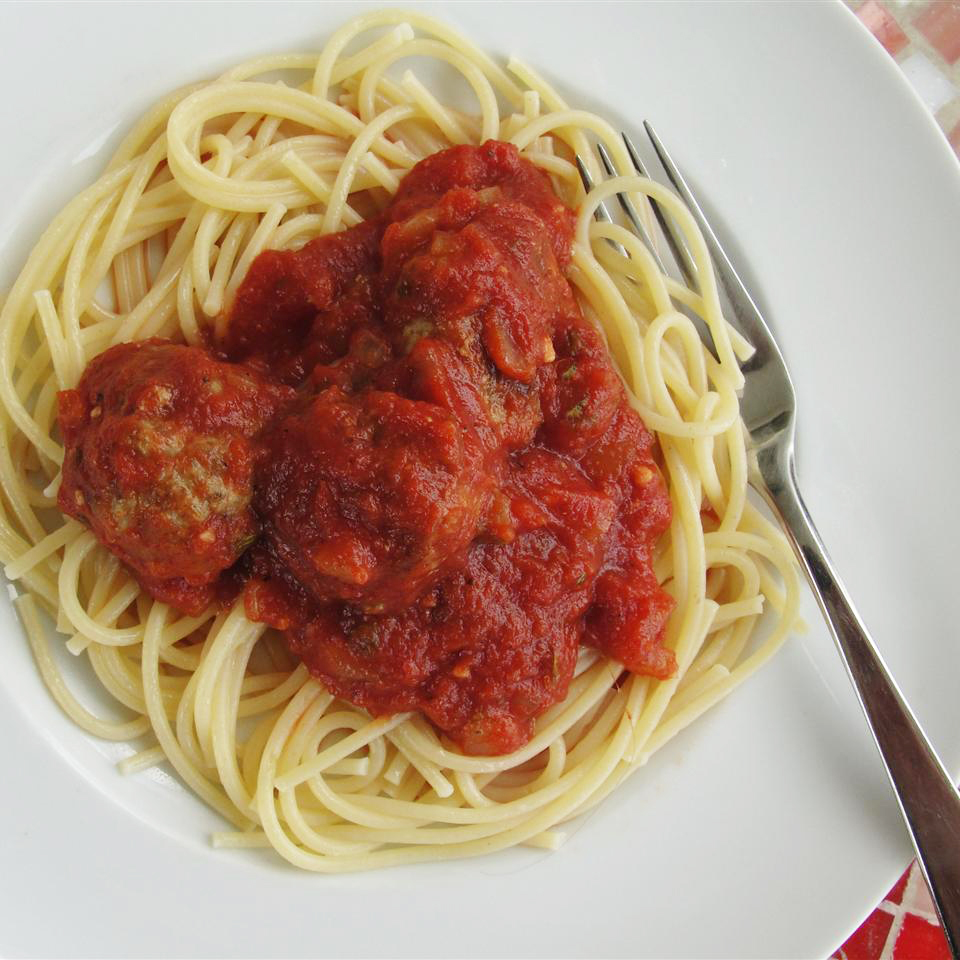

Spaghetti

A quick and simple spaghetti with tomato sauce
This surprisingly simple spaghetti with tomato sauce will
surely give you a taste of Italy. From its aromatic
ingredients to its vibrant, shimmering color, you and your
fellow dining mates will be amazed by the flavor and simplicity of this well
known dish.
Ingredients
- 2 teaspoons olive oil
- 1/2 small onion, chopped
- 2 green onions, chopped
- 2 teaspoons crushed garlic
- 1 (28 ounce) can peeled and diced tomatoes
- 4 teaspoons dried basil
- 4 teaspoons dried oregano
- 1 teaspoon white sugar
Steps
- Heat oil in a large saucepan over medium heat.
- Add onion, green onion, and garlic; cook until onions are translucent,
3 to 4 minutes.
- Stir in tomatoes, basil, oregano, and sugar.
- Bring to a boil, reduce heat to low, and simmer for 20 minutes.